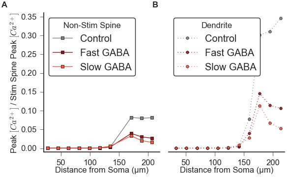

This is the ModelDB repository for:
Dorman, Daniel B., Joanna Jedrzejewska-Szmek, and Kim T. Blackwell. "Inhibition enhances spatially-specific calcium encoding of synaptic input patterns in a biologically constrained model." eLife 7 (2018): e38588.[PubMed]
The GENESIS Simulator code was contributed by Daniel Dorman.
The model is a spiny projection neuron of the striatum. It includes 4 primary, 8 secondary, and 16 teriary dendritic branches, with more than 3000 explicitly modeled dendritic spines.
It includes known ion channels for this neuron type, including NaF, KaF, KaS, Krp, KIR, CaL1.3, CaL1.2, CaR, CaN, CaT3.2, CaT3.3 voltage gated channels.
It includes calcium dynamics using the GENESIS difshell/difbuffer objects, which model calcium buffering and diffusion within subdivided volumes of the dendritic and spine compartments.
This model version is a modification/further development of a previously published model in ModelDB: http://modeldb.yale.edu/189153
The top-level simulation script can be run by:
genesis PSim_ConstrainUp_GABA.g
The top-level parameter file is PSim_Params.g, which overrides parameters set in other files (e.g. Sim_Params.g, MScell/globals.g).
The following python script will run several simulations to reproduce data for Figure 7A-B:
python constrainup_GABA.py
After about 1 hour 13 minutes (on a 2012 MacBook Pro) the output data will be saved in ./SimData
After running constrainup_GABA.py, Figure 7A-B can be regenerated from output data using the python script: figure7.py
python figure7.py which in less than a minute should generate: 